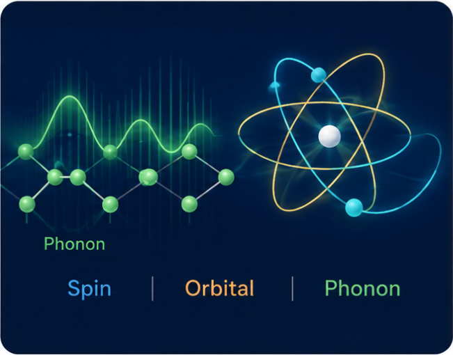

2026
Emerging Nanoelectronics Lab website launched
A new website for our research group is now online.
We study spin, orbital and phonon transport, together with emerging magnetic materials and nanoscale devices, to develop new electronic functionalities. Our research connects transport physics with MRAM, in-memory computing and probabilistic computing for future information technologies.
We connect transport phenomena, emerging magnetic materials, and magnetic devices with new concepts for nanoelectronics and computing.

Harnessing multiple transport channels and their interconversion for efficient nanoscale electronic devices.

Exploring unconventional magnetic materials and heterostructures for new spintronic functionalities.

Developing MTJ-based memory and computing technologies using nonvolatility and stochastic device dynamics.